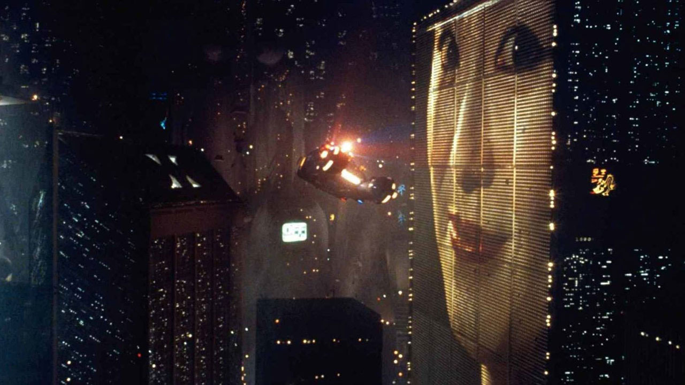
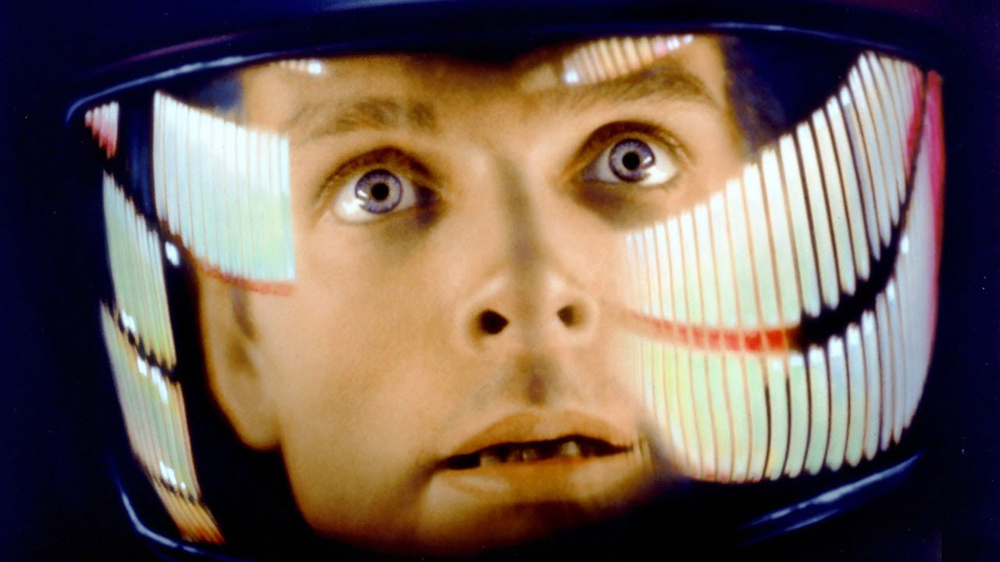
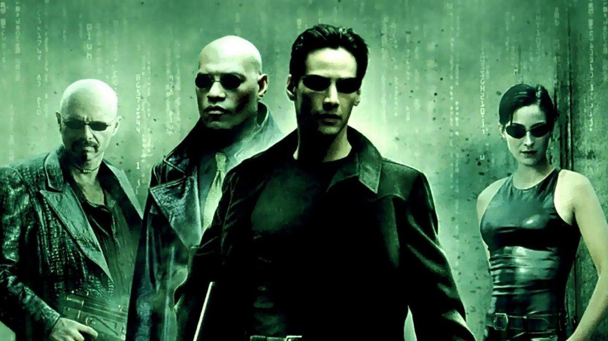
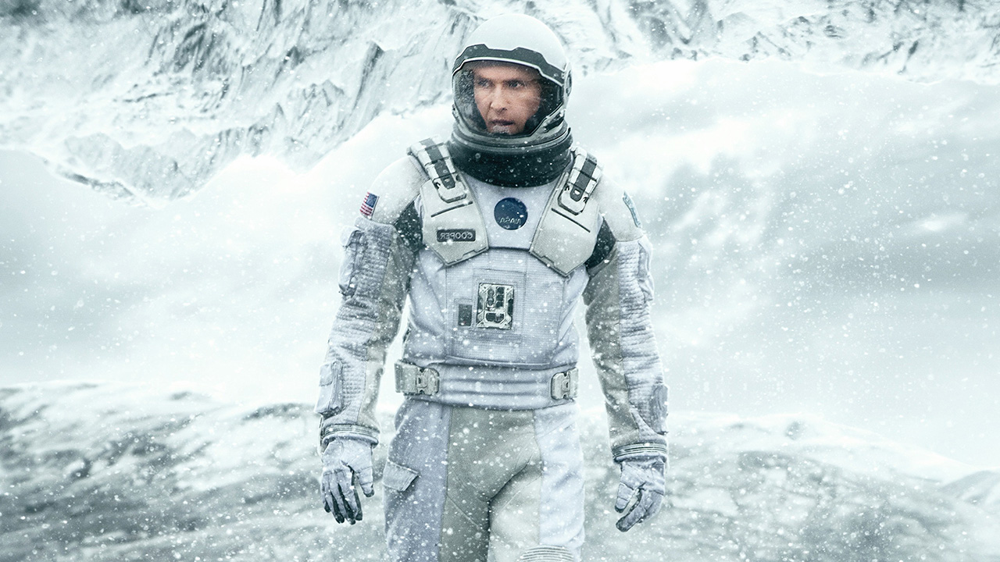

Science Fiction


2001: A Space Odyssey (1968)
When a large black monolith is found beneath the surface of the moon, the reaction immediately is that it was intentionally buried.Alien (1979)
When commercial towing vehicle Nostromo, heading back to Earth, intercepts an SoS signal from a nearby planet, the crew are under obligation to investigate.

The Matrix (1999)
When a beautiful stranger leads computer hacker Neo to a forbidding underworld, he discovers the shocking truth--the life he knows is the elaborate deception of an evil cyber-intelligence.
